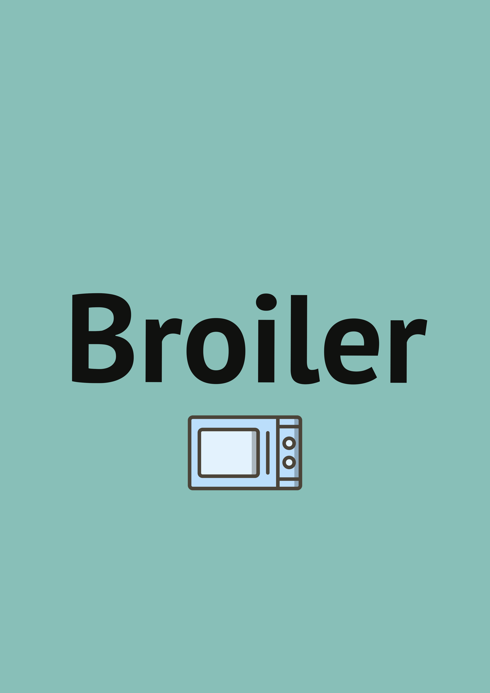

<section id="projects">
    <div class="wrapper">
	<div class="text-center">
            <h1 class="blue-title">BiscuitOS 社区开源项目</h1>
        </div>
        <div id="vertical-timeline" class="light-timeline">

            <div class="vertical-timeline-block">
                <div class="vertical-timeline-icon">
                    <i class="fa fa-paw" aria-hidden="true"></i>
                </div>
                <div class="vertical-timeline-content">
                    <h4><a>BiscuitOS 开源项目</a></h4>
                    <p>
			<span>BiscuitOS 项目用于自动化部署不同版本的 Linux 开发环境，其涵盖了 0.x, 1.x, 2.x, 3.x, 4.x, 5.x, 6.x 以及最新的主线内核。项目可模拟并运行在 ARM、ARM64、RSICV、I386、X86-64 架构之上，并支持树莓派 3B/4B. BiscuitOS 项目还提供了驱动、内存管理、文件子系统、虚拟化等多种子系统的实践案例，可以在 BiscuitOS 上稳定实践，是学习实践的内核的不错的开源工具.</br></span>
			<p>BiscuitOS 项目地址: <a href="https://github.com/BiscuitOS/BiscuitOS" target="_blank">Github-MainPage</a> and <a href="https://gitee.com/BiscuitOS_team/BiscuitOS" target="_blank">Gitee-MainPage</a></p>
			<span></span>
                    	
                    	
                    </p>
                </div>
            </div>
            <div class="vertical-timeline-block">
                <div class="vertical-timeline-icon">
                    <i class="fa fa-sun-o" aria-hidden="true"></i>
                </div>
                <div class="vertical-timeline-content">
                    <h4><a>Broiler 开源项目</a></h4>
                    <p>
			<span>Broiler 项目是一个轻量级的 QEMU 平替方案，其通过最精简的代码实现了 X86 架构的模拟，并提供了 PCI 设备、PIO、MMIO、MSIX 中断虚拟化的模板，并与 BiscuitOS 项目配合可以为其提供多种硬件解决方案，方便开发者对特殊硬件的实践需求。Broiler 项目也是实践 KVM 的最佳选择，项目报了多个案例用于实践 KVM 多种场景，使开发者对虚拟化的学习不再止步于书本和代码，通过实践对 KVM 有更深刻的认知</br></span>
                    </p>
			<p>Broiler 项目地址: <a href="https://github.com/BiscuitOS/Broiler" target="_blank">Github-MainPage</a> and <a href="https://gitee.com/BiscuitOS_team/broiler" target="_blank">Gitee-MainPage</a></p>
                    <p></p>
                    
                </div>
            </div>
        </div>
    </div>
</section>
